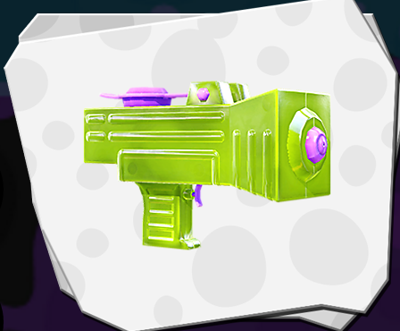

Perfect gear die je kan gebruiken voor de Splattershot Jr. Klik op de plaatje en kijk wat ik er van vind en waarom de goed zijn.
Ik vind dat de Splattershot Jr. een van de beste in splatoon. dat komt door de hoge rapid fire en de bubbler
De Snorkel mask is goede headgear want heeft een main damage up zodat je wapen met 9% sterker is en met de 2 sub ability van Swim speed up ben je met 5% sneller
De Squidstar Waistcoat is mijn favourite clothes dat je kan dragen want het heeft een de main abilty cold-blood dat zorg er voor dat als je een echolocator maar slechts 2 seconden duurt. De sub abilty dat de Squidstar Waistcoat is voor mij ideaal want door de 3 damage up kan ik iemand slatten met 4 schoten in plaats van 5.
De Red Hi-tops is mijn schoen die heb heeft de main abilty van ink resistance dat zorg er wordt dat je niet zo traag bent op de vijand zijn turf-ground(inkt gebied). De sub abilty is ook handig want swim speed up is altijd handig om snel te zijn.